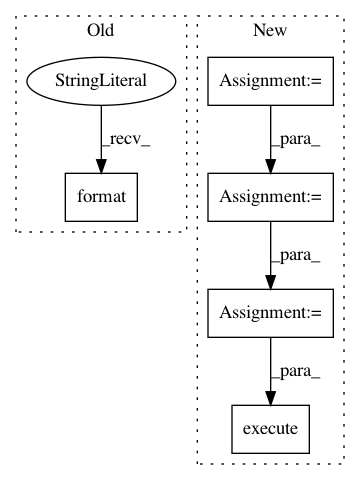

4707229d41b18ac74ff186bf9a6874035c378719,common.py,,update_loglosses,#Any#Any#,69
Before Change
test_logloss = log_loss(test_data["target"].as_matrix(), submission_test_data["probability"].as_matrix())
// TODO: Get the postgres submission id
cursor.execute("UPDATE submissions SET validation_logloss={} AND test_logloss={} WHERE id = "{}"".format(validation_logloss, test_logloss, ))
postgres_db.commit()
cursor.close()
postgres_db.close()
After Change
db = connect_to_database()
submission_path = download_submission(db, submission_id)
submission = pd.read_csv(submission_path)
mongo_submission = db.submissions.find_one({"_id": ObjectId(submission_id)})
postgres_db = connect_to_postgres()
cursor = postgres_db.cursor()
cursor.execute("SELECT open_time FROM rounds WHERE number = {}".format(round_number))
rounds = cursor.fetchall()
round_open_time = rounds[0][0].date()
round_data_date = round_open_time - timedelta(days=1)
// Get the truth data
public_targets_db = connect_to_public_targets_db()
query = "SELECT id, target FROM tournament_historical_encrypted WHERE data_type = "validation""
validation_data = pd.read_sql(query, public_targets_db)
validation_data.sort_values("id", inplace=True)
test_data = pd.read_sql("SELECT id, target FROM tournament_historical_encrypted WHERE data_type = "test"", public_targets_db)
test_data.sort_values("id", inplace=True)
// Calculate logloss
submission_validation_data = submission.loc[submission["id"].isin(validation_data["id"].as_matrix())].copy()
submission_validation_data.sort_values("id", inplace=True)
submission_test_data = submission.loc[submission["id"].isin(test_data["id"].as_matrix())].copy()
submission_test_data.sort_values("id", inplace=True)
validation_logloss = log_loss(validation_data["target"].as_matrix(), submission_validation_data["probability"].as_matrix())
test_logloss = log_loss(test_data["target"].as_matrix(), submission_test_data["probability"].as_matrix())
// Get the submission Postgres id
query = "SELECT s.id FROM submissions s INNER JOIN users u ON s.user_id = u.id WHERE u.username = "{}" AND s.inserted_at = "{}"".format(mongo_submission["username"], mongo_submission["created"])
cursor.execute(query)
submission_id = cursor.fetchone()[0]
query = "UPDATE submissions SET validation_logloss={}, test_logloss={} WHERE id = "{}"".format(validation_logloss, test_logloss, submission_id)
cursor.execute(query)
In pattern: SUPERPATTERN
Frequency: 3
Non-data size: 5
Instances
Project Name: numerai/submission-criteria
Commit Name: 4707229d41b18ac74ff186bf9a6874035c378719
Time: 2017-11-10
Author: xander@numer.ai
File Name: common.py
Class Name:
Method Name: update_loglosses
Project Name: home-assistant/home-assistant
Commit Name: a2e45b8fdde315b756691b4ae573ad55f55dc002
Time: 2016-07-02
Author: rhooper@toybox.ca
File Name: homeassistant/components/history.py
Class Name:
Method Name: state_changes_during_period
Project Name: home-assistant/home-assistant
Commit Name: a2e45b8fdde315b756691b4ae573ad55f55dc002
Time: 2016-07-02
Author: rhooper@toybox.ca
File Name: homeassistant/components/history.py
Class Name:
Method Name: get_significant_states